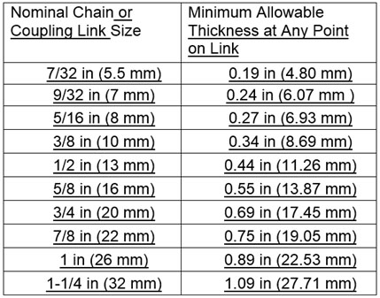

15.D Slings
15.D.03–15.D.07
15.D.03 Wire Rope Slings. Wire rope slings shall be inspected by a CP for the following:
- Broken wires;
- Severe localized abrasion or scraping;
- Kinking, crushing, bird caging or any other damage to the rope structure;
- Evidence of heat damage;
- Crushed, deformed, or worn end attachments;
- Severe corrosion of the rope, and attachments or fittings;
- Missing or illegible sling identification;
- Other conditions that cause doubt as to safe use of sling.
TABLE 15-1
Minimum Thickness of Chain Links

15.D.04 Metal Mesh Slings. Metal mesh slings shall be inspected by a CP for the following:
- Broken weld or brazed joint along the sling edge;
- Broken wire in any part of the mesh;
- Reduction in wire diameter of 25% due to abrasion or 15% due to corrosion;
- Lack of flexibility due to distortion of the mesh;
- Distortion of the choker fitting so that the depth of the slot is increased by more than 10%;
- Distortion of either end fitting so the width of the eye opening is decreased by more than 10%;
- A 15% reduction of the original cross-sectional area of metal at any point around the hook opening of end fitting;
- Excessive pitting or corrosion of fittings; broken or cracked fittings; distortion of either end fitting out of its plane;
- A sling in which the spirals are locked or without free articulation;
- Other visible damage that causes doubt as to the strength of the sling.
15.D.05 Synthetic Fiber Rope Slings.
- Synthetic rope slings shall be inspected by a CP for the following:
- Broken or cut fibers, either internally or externally;
- Cuts, gouges, abrasions; seriously or abnormally worn fibers;
- Powdered fiber or particles of broken fiber inside the rope between the strands;
- Variations in size or roundness of strands;
- Discoloration or rotting; weakened or brittle fibers;
- Excessive pitting or corrosion, or cracked, distorted, or broken fittings;
- Kinks;
- Melting or charring of the rope;
- Other visible damage that causes doubt as to the strength of the rope.
- Synthetic rope slings shall not be used while frozen. When using synthetic rope slings in chemically active or excessively hot environments, consult with the sling manufacturer or Qualified Person (QP).
- Synthetic rope slings shall be protected from abrasion by padding where it is fastened or drawn over square corners or sharp or rough surfaces.
- Do not allow synthetic rope slings to be used in contact with objects or at temperature in excess of 194°F (90°C) or below -40°F (40°C).
▸Note: Some synthetic yarns do not retain their breaking strength during long term exposure above 140°F (60°C).
- Eye Splices. All splices shall be made per the rope manufacturer or a QP and in accordance with ASME B30.9.
- Knots shall not be used in lieu of eye splices.
15.D.06 Synthetic Web Slings.
- Synthetic Web Slings shall be inspected for the following:
- Acid or caustic burns;
- Melting or charring of any part of the sling;
- Snags, holes, tears, or cuts;
- Broken or worn stitches;
- Excessive abrasive wear;
- Knots in any part of the sling;
- Wear or elongation exceeding the amount recommended by the manufacturer;
- Excessive pitting or corrosion, or cracked, distorted, or broken fittings;
- Other visible damage that causes doubt as to the strength of the sling.
- Synthetic web slings shall not be allowed to be used in contact with objects or at temperature in excess of 194°F (90°C) or below -40°F (40°C).
▸Note: Some synthetic yarns do not retain their breaking strength during long term exposure above 140°F (60°C).
15.D.07 Synthetic Round Slings.
- New slings (before initial use) shall be marked by the manufacturer to show the following, in addition to items required in Section 15.D.01.c:
- The core material;
- The cover material if different from the core material.
- Synthetic Round Slings shall be inspected for the following and where any such damage or deterioration is present, remove the sling or attachment from service immediately:
- Missing or illegible sling identification;
- Acid or Caustic burns;
- Evidence of heat damage;
- Holes, tears, cuts, abrasive wear, or snags, that expose the core yarn;
- Broken or damaged core yarns;
- Welding spatter that exposes the core yarns;
- Knots in the round sling body, except for core yarn knots inside the cover;
- Discoloration and brittle or stiff areas on any part of the sling;
- Pitted, corroded, cracked, bent, twisted, gouged, or broken fittings;
- Other conditions that cause doubt as to the continued use of the sling.
- Synthetic round slings shall not be allowed to be used in contact with objects or at temperature in excess of 194°F (90°C) or below -40°F (40°C).
▸Note: Some synthetic yarns do not retain their breaking strength during long term exposure above 140°F (60°C).
{kind=link}